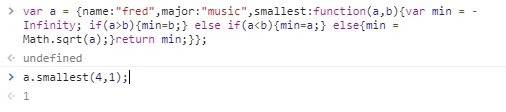
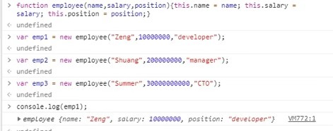
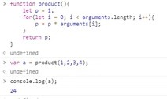
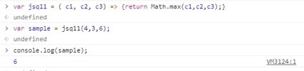

1. Determine what this Javascript code will print out (without running it):
x = 1;
var a = 5;
var b = 10;
var c = function(a, b, c) {
var x = 10;
document.write(x);
document.write(a);
var f = function(a, b, c) {
b = a;
document.write(b);
b = c;
var x = 5;
}
f(a,b,c);
document.write(b);
}
c(8,9,10);
document.write(b);
document.write(x);
}
10,8,8,9,10,1
2. What is the difference between a method and function?
A function is defined outside of an
object.
A method is defined as the property of an object.In addition, methods are implicitly given a reference to the parent
object (this) and are able to operate on other data that is stored within the object.
3. What does 'this' refer to when used in a Java method?
The current class.
4. What does 'this' refer to when used in a JavaScript method?
The current object.
5. What does 'this' refer to when used in a JavaScript constructor function?
The newly created
object.
6. Assume object x is the prototype for object y in Javascript. Object x has a method f( ) containing keyword
'this'.
When f is called by x.f( ), what does 'this' refer to?
x
7. What is a free variable in JavaScript?
A variable referred to by a function that is
not one of its parameters or local variables.
8. Create an object that has properties with name = "fred" and major="music" and a property that is a
function
that takes 2 numbers and returns the smallest of the two, or the square of the two if they are equal.

9. Write Javascript code for creating three Employee objects using the "new" keyword and a constructor
function.
Employee objects have the following fields: name, salary, position.

10. Write a Javascript function that takes any number of input arguments and returns the product of the
arguments.

11. Write an arrow function that returns the maximum of its three input arguments.
